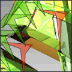
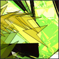

The Teaser is a piece of musaic, - of interactive visual music. The user plays, explores, controls and navigates through a world of sound. At the same time the computer is tracking the user's behaviour and directs him or accordingly.
The Teaser has few levels, each with its own characteristics. Each level has 8 different sections which the user has to go through before getting into next level. After one cycle (the 8 sections) the computer tracks the user's behaviour sending him or her to the appropriate next level.
The flake following the mouse is controlling the repeating sound which changes on each level. If it is high on the screen, the pitch of the sound is high and if it is on the left of the screen, the sound pans to the left speaker. By clicking on the flake, the user goes to the next section.
The rhythm track is built on a system of randomness where the program chooses a path through a branching tree, where each node has a certain drum loop. In this version of the Teaser the drum loop is played either 4 or 8 times before it goes to the next branch. This system can be explored further in the sketches section.
The Teaser is thus precomposed, improvised and randomly generated at the same time. It plays with tension and release, consonance and dissonance, rhythm and non-rhythms, structure, repetition and variation, intensity and volume.